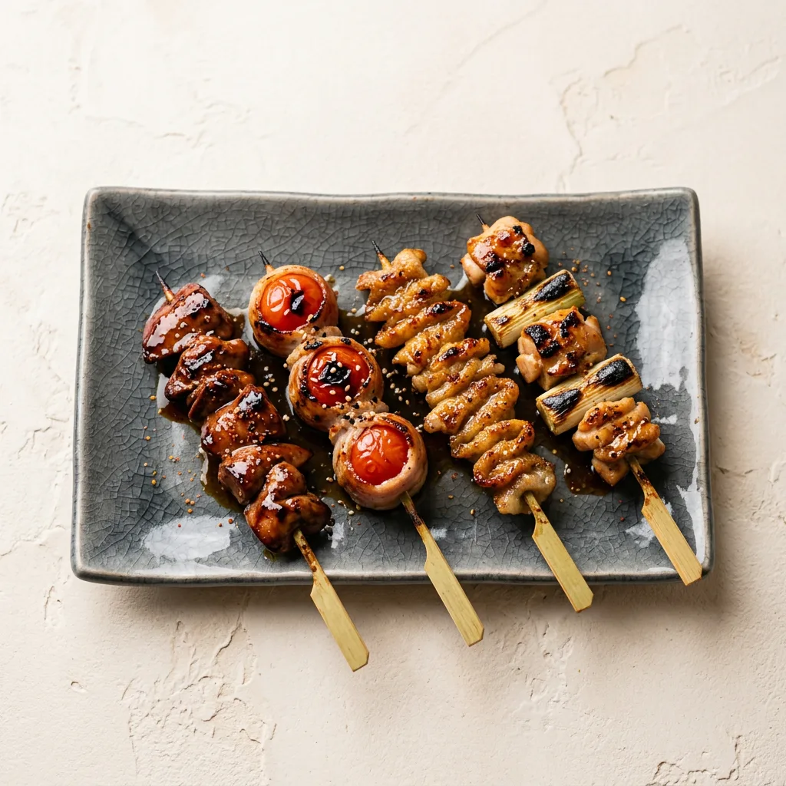

居酒屋
ご予約・お問い合わせ050-8883-6365
sake to ate
4.7Googleの口コミ 9件

いいお酒には、いいあてを。
日之出の居酒屋「sake to ate」。
日本酒とそれに合う「あて」を、ゆっくり楽しめるお店です。
日本酒とあてを楽しむためのお店です。
お酒に合わせて、あても一品ずつ考えてお出ししています。
Izakaya

Menuおすすめの品
今日のあて
お酒に合わせた、その日の一品

日本酒
好みに合わせて選べる一杯

季節の一皿
旬の素材をお酒と一緒に
※ 写真と内容はイメージです。実際のお品書きに差し替えます。

About
お店のこと
日本酒とあてを楽しむためのお店です。
お酒に合わせて、あても一品ずつ考えてお出ししています。
Sceneこんなときに

日本酒好きの方に
いろんなお酒を少しずつ

ひとりでゆっくり
カウンターで静かに

大切な人と
落ち着いた夜の時間
アクセス
- 住所
- 〒910-0859 福井県福井市日之出２丁目６−１０ サンコーポラス 1F サケトアテ
- 電話
- 050-8883-6365
- 営業時間
- 〔要確認〕
- 定休日
- 〔要確認〕
今夜は、
お酒とあてを。